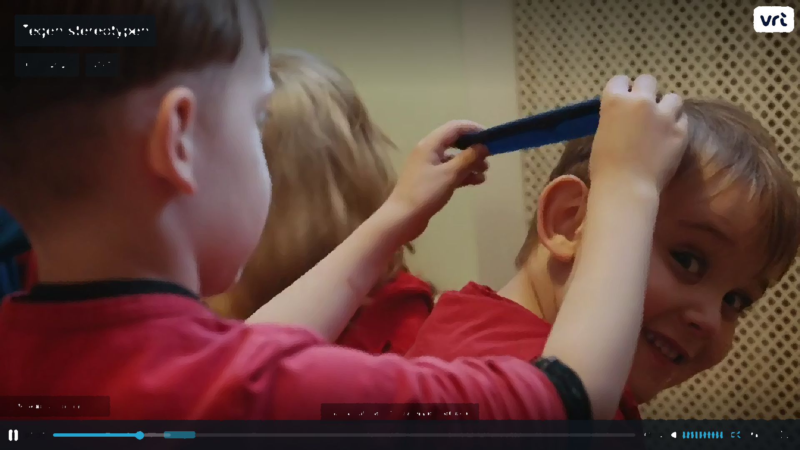

Ook wij in België zijn steeds meer bezig met gendergelijkheid en het positieve effect ervan op beide geslachten. Maar in IJsland gaan ze nog een stapje verder. Er zijn heel wat scholen die gendergelijkheid implementeren in het lessenpakket. Wat dat concreet betekent, zien we in de lokale kleuterschool van Reykjavik.
We gaan hierover in gesprek met Margaret, de bedenker van dit onderwijsmodel en nog altijd een bevlogen pedagoge.
| Interviewer | Margaret | ||
|---|---|---|---|
| Waarom heb je deze school opgericht? | Weet je, zelfs baby's van een paar maanden oud beginnen al met de wereld in tweeën op te delen. Als ze twee jaar zijn, weten ze al precies wat het betekent om een jongen te zijn of een meisje. En ze willen hun rol spelen. Dus meisjes zien de jongens al die mannelijke dingen doen: Sterk zijn, in de bomen klimmen, schreeuwen en rennen. De meisjes zetten een stap achteruit en denken: O, jongens doen dit dus? O, dat is dus niks voor meisjes? En omgekeerd hetzelfde. Jongens nemen een monopolie op de ene helft van de wereld en de meisjes op de andere helft. Het is belangrijk dat jongens zachtaardig kunnen zijn, elkaar in de ogen kunnen kijken en mooie dingen zeggen, zonder dat als meisjesachtig te zien. Het gaat hier om menselijke kwaliteiten, voor iedereen. We geven ze extra vaardigheden mee. En tegelijk helpen we hen om trots te zijn op hun gender, en later zullen ze inzien dat het een spectrum is en geen twee vakjes. Dan kunnen ze gaan ontdekken wat traditioneel is en wat ze wel en niet in hun leven willen. | ||
| Denk je dat ze deze opvoeding de rest van hun leven met zich meenemen? | Het is bewezen dat ze ruimdenkender zijn als het gaat over wat mannen en vrouwen kunnen. Ze zijn toegankelijker voor alles. | ||
Het uitgangspunt van de school: Jongens en meisjes niet in vakjes steken, zodat ze kunnen zijn, doen of worden wat ze willen en opgroeien tot sterke mannen en vrouwen, letterlijk en figuurlijk.